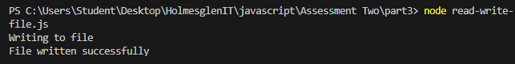
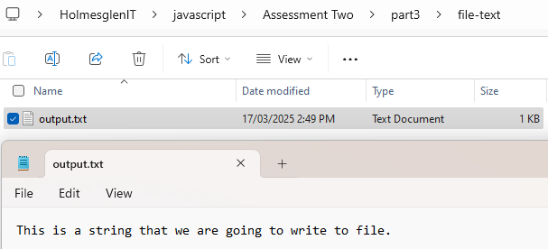
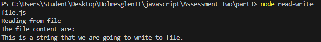

- Create algorithm for saving string to a text file


// Certificate IV in Information Technology
// Holmesglen Institute, VIC, Australia
// Student Name: Van Minh Le
// Student ID: 100693330
In this part, you are required to design and implement a range of algorithms to manipulate strings.
The
following operations need to be done using JavaScript programming language and the result need to be
verified
using node.
You will then need to create an algorithm and implement this to write a string to a text file
and read
in a
text file. Reading and writing to file can be done in either C# or JavaScript. If using JavaScript,
you will
need to verify the results using Node.js.
| Task | Javascript Code | Result |
|---|---|---|
| Step 01:Define the following strings: |
|
Not Found |
Step 02: Use the utility functions length and chat to find out
information
|
|
Not Found Not Found Not Found |
Step 03: Use the slice and substring functions to create new strings.
|
|
Not Found Not Found |
Step 04 Change the case of the myName string
|
|
Not Found Not Found |
Step 05 Use concat, trim, replace and split to create new strings
|
|
Not Found Not Found Not Found Not Found |
| Task | Result |
|---|---|
Step 06: Create algorithms
|
|
|
|
|
| Task | Javascript Code | Result |
|---|---|---|
Step 07: Write a text file
|
|
  |
| Step 08:Read text from a text file | |
 |